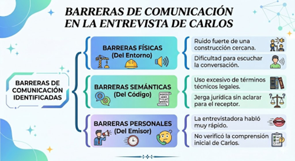
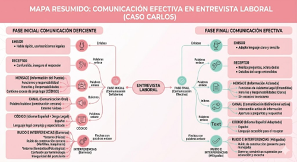
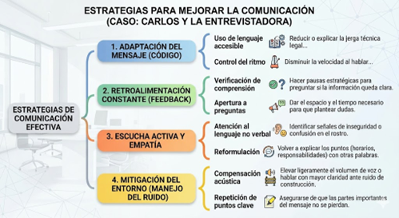
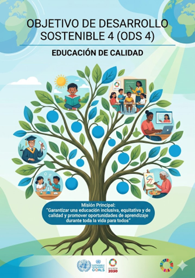
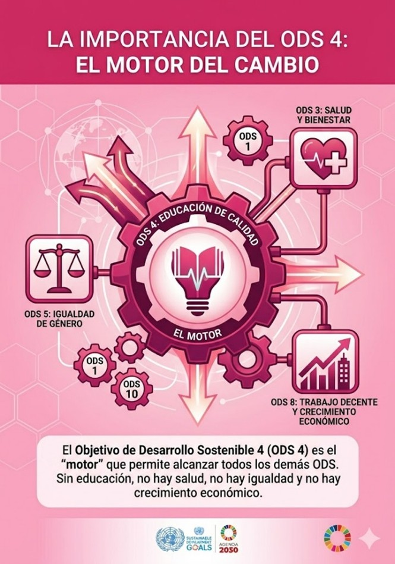
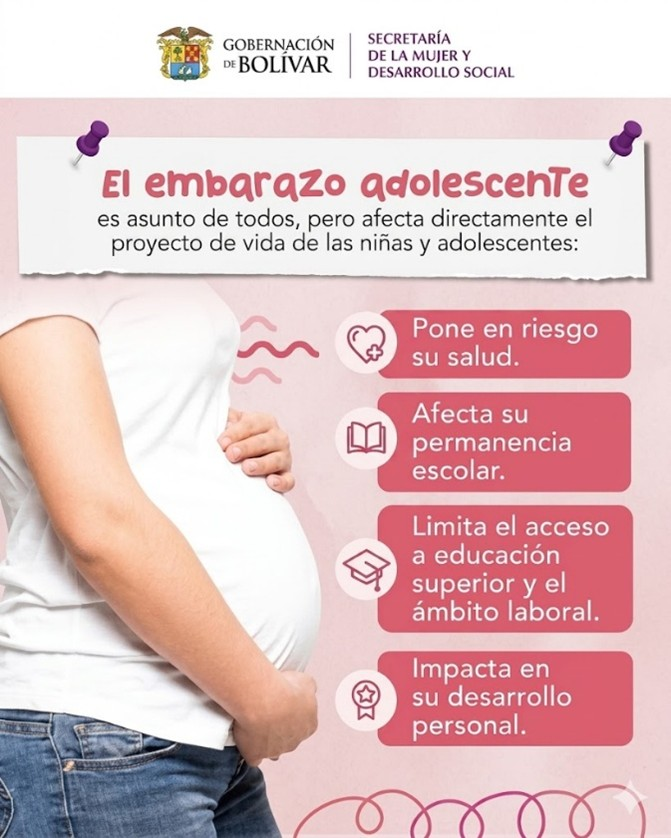

YENI CHAVEZ TUESTA
Estudiante de Facultad de Derecho
Semana 01 | Caso: Comunicación efectiva en una entrevista laboral
Resumen de la Clase
Analizamos el caso de Carlos, quien postuló a una plaza de asistente legal. Al inicio, la comunicación no fue efectiva debido a barreras físicas (ruido de construcción), barreras personales (la entrevistadora habló rápido) y barreras semánticas (uso excesivo de términos técnicos legales). Esto generó inseguridad en Carlos. La situación mejoró cuando la entrevistadora adaptó su mensaje con un lenguaje claro, verificó la comprensión y permitió a Carlos hacer preguntas.
Conceptos Clave
Evidencias de Aprendizaje



Conclusión
Semana 02 | Problemática y Desigualdad Educativa
Resumen de la Clase
Se planteó la siguiente problemática de investigación: ¿Cómo afectan las desigualdades socioeconómicas al acceso, permanencia y calidad de la educación secundaria, limitando rendimiento académico y oportunidades futuras?
Evidencias de Aprendizaje
Semana 03 | Informe Académico y Organizadores Visuales
Resumen de la Clase
Trabajamos en la elaboración del informe académico titulado: "Desigualdades socio económicas y su impacto en la educación secundaria". Acompañamos esta investigación estructurando la información a través de diversos textos, organizadores gráficos y trabajos grupales audiovisuales.
Evidencias de Aprendizaje
Semana 04 | Trabajo Colaborativo Multimodal
Resumen de la Clase
Esta semana se enfocó fuertemente en el trabajo colaborativo para producir contenido multimodal. Integramos documentos de texto en PDF con la elaboración de un video multimodal explicativo, culminando todo en una presentación web estructurada mediante Google Sites.
Evidencias de Aprendizaje
Semana 05 | ODS 4: El Motor del Cambio
Resumen de la Clase
El Objetivo de Desarrollo Sostenible 4 (ODS 4) busca "Garantizar una educación inclusiva, equitativa y de calidad". Analizamos cómo la educación es el "efecto multiplicador" de la Agenda 2030: sin educación no hay salud (ODS 3), no hay igualdad de género (ODS 5 y 10) y no hay crecimiento económico sostenido (ODS 8 y 1).
Sin embargo, surge la controversia de si este ODS puede cumplirse mientras las desigualdades socioeconómicas sigan limitando el acceso a una educación de calidad por la falta de recursos tecnológicos y pobreza, como se evidencia en diversas fuentes y redes sociales.
Evidencias de Aprendizaje


Semana 06 | La argumentación académica
Resumen de la Clase
La argumentación académica es un proceso lógico y discursivo que se utiliza en el ámbito universitario y científico para defender una postura o idea (tesis) basándose en evidencias empíricas, razonamientos rigurosos y fuentes bibliográficas confiables. A diferencia de una simple opinión personal —que se basa en creencias o emociones—, la argumentación académica exige demostrar y probar la validez de lo que se afirma ante una comunidad crítica de lectores o pares.
Elementos Clave del Argumento
- La Tesis (El núcleo): Es la idea central, la afirmación o la postura debatible que el autor busca demostrar a lo largo de todo el trabajo.
- El Cuerpo Argumentativo: Son las premisas y razones lógicas que sostienen la tesis. Responden a la pregunta: ¿Por qué afirmo esto?
- Las Evidencias (El respaldo): Un argumento académico necesita el respaldo de datos concretos, estadísticas, resultados de investigaciones, o citas de expertos y autores reconocidos.
- La Contraargumentación: Es la capacidad de anticipar y presentar posibles objeciones contrarias a la tesis para luego refutarlas, dándole mayor objetividad al trabajo.
- La Conclusión: Es la síntesis final donde se reafirma la tesis inicial, demostrando que ha sido validada.
Características Principales
Evidencias de Aprendizaje
Resumen del archivo: Este documento detalla el proceso lógico y discursivo de la argumentación académica. Incluye la estructura para plantear una tesis, el desarrollo del cuerpo argumentativo y la importancia de utilizar evidencias empíricas y fuentes confiables para evitar falacias.
Ver Documento en Campus VirtualSemana 07 | El Podcast y Ecosistema Multimodal
Resumen de la Clase
Aprendimos que un podcast es un contenido de audio bajo demanda (flexible y temático) que forma parte de un ecosistema multimodal, complementando lo visual y lo escrito. Trabajamos en el guion de un podcast titulado "Voces y Conciencia", centrado en la problemática del embarazo adolescente y su impacto en el desarrollo personal, escolar y laboral.
Evidencias de Aprendizaje

🎙️ Voces con Conciencia
El Embarazo Adolescente en el Perú
Participantes: Yeni y Emerson
Introducción
Yeni: Hola a todos, bienvenidos a "Voces con Conciencia", un espacio donde analizamos temas que impactan nuestra sociedad. Hoy hablaremos sobre una problemática que afecta a miles de jóvenes en nuestro país: el embarazo adolescente en el Perú.
Emerson: Así es, Yeni. El embarazo adolescente tiene consecuencias importantes en la vida de los jóvenes, afectando su educación, salud y oportunidades de desarrollo. Por ello, es fundamental reflexionar sobre sus causas y posibles soluciones.
Desarrollo
Yeni: En mi opinión, una de las principales causas del embarazo adolescente es la falta de educación sexual integral. Muchos jóvenes no reciben información adecuada sobre métodos anticonceptivos y prevención, lo que aumenta el riesgo de embarazos no planificados.
Emerson: Estoy de acuerdo. Además, en muchos hogares todavía existe temor o vergüenza para hablar de estos temas. Como consecuencia, los adolescentes buscan información en fuentes poco confiables o toman decisiones sin conocer completamente las consecuencias.
Yeni: Otro factor importante es la presión social y la influencia del entorno. Algunos adolescentes inician relaciones sin estar preparados emocionalmente para asumir las responsabilidades que estas implican.
Emerson: Exactamente. Las consecuencias pueden ser muy serias. Muchas adolescentes abandonan sus estudios para dedicarse al cuidado de sus hijos, reduciendo sus posibilidades de acceder a una educación superior y mejores oportunidades laborales.
Yeni: También debemos considerar el impacto emocional y económico. Un embarazo a temprana edad puede generar estrés, ansiedad y dificultades económicas tanto para los jóvenes como para sus familias.
Emerson: Algunas personas consideran que esta situación es únicamente responsabilidad de los adolescentes. Sin embargo, yo pienso que también involucra a la familia, las instituciones educativas, los centros de salud y el Estado.
Yeni: Comparto esa opinión. La prevención requiere un trabajo conjunto que incluya educación sexual de calidad, orientación profesional y una comunicación abierta entre padres e hijos.
Conclusión
Emerson: En conclusión, el embarazo adolescente es una problemática social que afecta el desarrollo personal, académico y económico de muchos jóvenes peruanos.
Yeni: Por ello, es necesario fortalecer la educación, promover la prevención y generar espacios de diálogo que permitan a los adolescentes tomar decisiones responsables e informadas sobre su futuro.
Emerson: Gracias por acompañarnos en este episodio de "Voces con Conciencia".
Yeni: Hasta una próxima oportunidad.
Semana 08 | Conclusión General del Curso
Al culminar este ciclo académico del curso de Comunicación Efectiva, puedo concluir que los conocimientos adquiridos han fortalecido mis habilidades para expresarme de manera clara, coherente y asertiva tanto de forma oral como escrita.
A lo largo del desarrollo de las diferentes actividades, aprendí la importancia de la escucha activa, la argumentación y la adaptación del mensaje según el contexto. Este portafolio evidencia el esfuerzo, la dedicación y el desarrollo de competencias comunicativas que serán de gran utilidad en mi formación profesional y personal.
Agradecimiento Especial